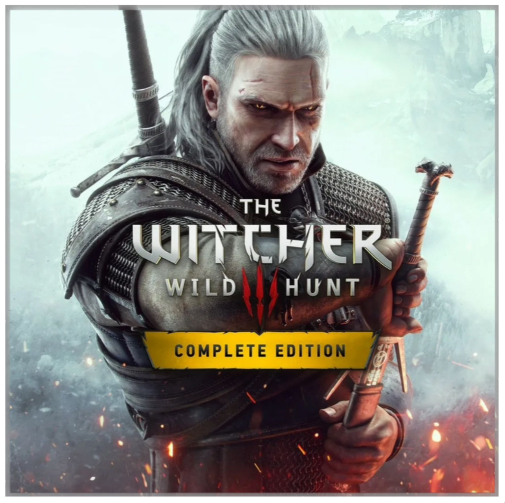

 Компьютерная игра в жанре action/RPG, разработанная и изданная польской студией CD Projekt RED. Изначально игра была выпущена 19 мая 2015 года на Windows, PlayStation 4 и Xbox One, затем 15 октября 2019 года на Nintendo Switch, а 14 декабря 2022 года — на PlayStation 5 и Xbox Series X/S. Является продолжением игр «Ведьмак» (2007) и «Ведьмак 2: Убийцы королей» (2011). Это третья игра, действие которой происходит в литературной вселенной книжной серии «Ведьмак», созданной польским писателем Анджеем Сапковским, а также последняя, которая повествует о приключениях Геральта из Ривии.
Страница Wikipedia